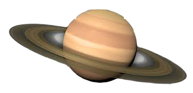

| Earth | Mars | Saturn | Neptune | |
|---|---|---|---|---|
|
|
 | |
|
| Mass(kg) | 5.98 x 1024> | |||
| Diameter(km) | 12756 | |||
| Mean Density (kg/m3) | 4420 | Escape Velocity (m/s) | 11200 | |
| Avg. Distance. from Sun | 1 AU (149,597,890 km) | |||
| Rotation Period (length of day in Earth days) | 1 (23.93 hours) | |||
| Revolution period (length of year in Earth days | 365.26 |